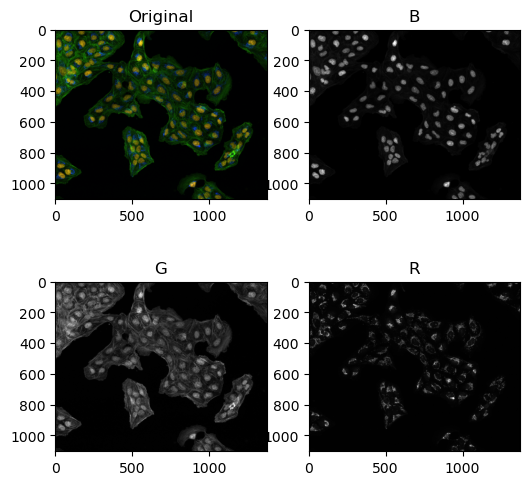
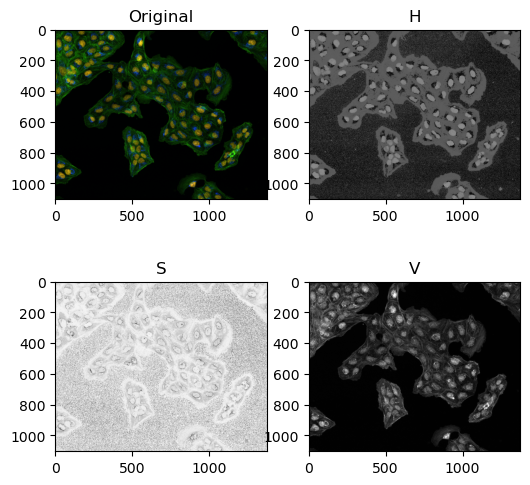
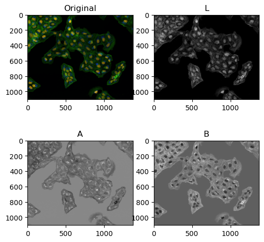
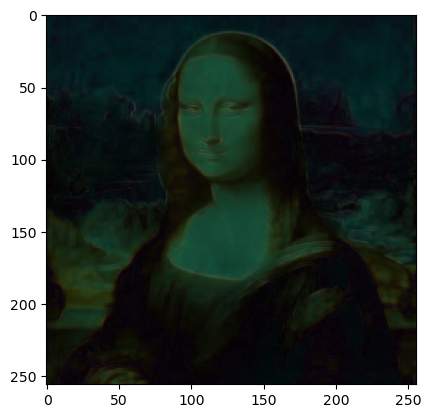
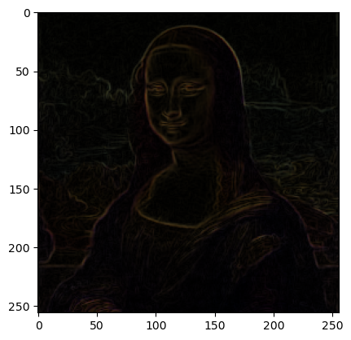
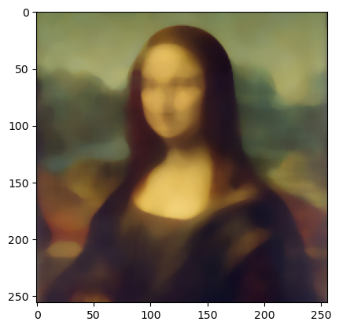
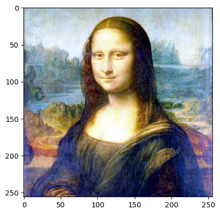
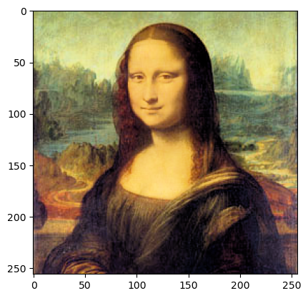

DIP-Introductory python tutorials for image processing(44-45)-Color Spaces Tutorial 44 - A note about color spaces in python Color spaces Color spaces are a way to represent color information present in an image.
3 popular color spaces are RGB, HSV and LAB.
import cv2from skimage import ioimport matplotlib.pyplot as plt'images/Osteosarcoma_01.tif' , 1 )'images/Osteosarcoma_01.tif' , 0 )'images/Osteosarcoma_01.tif' , as_gray=False )'images/Osteosarcoma_01.tif' , as_gray=True )
RGB Color space Stores information as Red, Green and Blue channels.
Additive color model.
Both scikit-image and opencv read color images by default as RGB but, opencv stored color infromation as BGR.
B, G, R = cv2.split(color_opencv)6 , 6 ))221 )'Original' )222 )'gray' )'B' )223 )'gray' )'G' )224 )'gray' )'R' )

HSV HSV stores color image information as Hue, Saturation and Value.
HSV separates luma, or the image intensity, from chroma or the color information.
HSV将亮度或图像强度从色度或颜色信息中分离出来。
When to use HSV?
For applications where you need to change only pixel intensites and not color information.
适用于只需要更改像素强度而不需要更改颜色信息的应用程序。
e.g. histogram equalization 直方图均衡化
hsv_image = cv2.cvtColor(color_opencv, cv2.COLOR_BGR2HSV)6 , 6 ))221 )'Original' )222 )'gray' )'H' )223 )'gray' )'S' )224 )'gray' )'V' )

LAB LAB expresses color as three values:
When to use LAB?
Just like HSV, LAB can be used for applications where you need to change only pixel intensities and color information.
就像HSV一样，LAB可以用于只需要更改像素强度和颜色信息的应用程序。
e.g. histogram equalization
Either HSV or LAB can be used interchangeably for most image processing tasks.
对于大多数图像处理任务，HSV或LAB都可以互换使用。
lab_image = cv2.cvtColor(color_opencv, cv2.COLOR_BGR2LAB)6 , 6 ))221 )'Original' )222 )'gray' )'L' )223 )'gray' )'A' )224 )'gray' )'B' )

Tutorial 45 - Applying filters designed for grey scale to color images in python from skimage.color.adapt_rgb import adapt_rgb, each_channel, hsv_valuefrom skimage import filtersfrom skimage import iofrom matplotlib import pyplot as pltfrom skimage.color import rgb2gray
Fails on color images as it is a grey filterMay work with newest skimage, but not clear what is does.
image = io.imread('images/monalisa.jpg' )
<matplotlib.image.AxesImage at 0x2c0eaaeab50>

Two ways to apply the filter on color images
Separate R, G and B channels and apply the filter to each channel and put the channel back together.
分开R, G和B通道，对每个通道使用过滤器，然后把通道放回一起。
Convert RGB to HSV and then apply filter to V channel and put it back to HSV and convert to RGB.
将RGB转换为HSV，然后对V通道应用滤镜，将其放回HSV并转换为RGB。
Too many lines of code to do these tasks but with adapt_rgb decorator the task becomes easy.
太多的代码行来完成这些任务，但使用adapt_rgb装饰器，任务变得容易。
@adapt_rgb(each_channel ) def sobel_each (image ):return filters.sobel(image)@adapt_rgb(hsv_value ) def sobel_hsv (image ):return filters.sobel(image)
each_channel_image = sobel_each(image)
<matplotlib.image.AxesImage at 0x2c0eab5cb50>

import cv2@adapt_rgb(each_channel ) def median_each (image, k ):return output_image13 )
<matplotlib.image.AxesImage at 0x2c0eb86fbb0>

from skimage import exposure@adapt_rgb(each_channel ) def eq_each (image ):return (output_image)
<matplotlib.image.AxesImage at 0x2c0ec1ef3d0>

@adapt_rgb(hsv_value ) def eq_hsv (image ):return (output_image)
<matplotlib.image.AxesImage at 0x2c0ed2423a0>

fig = plt.figure(figsize=(10 , 10 ))2 ,2 ,1 )'Input Image' )2 ,2 ,2 )'Equalized using RGB channels' )2 ,2 ,3 )'Equalized using v channel in hsv' )